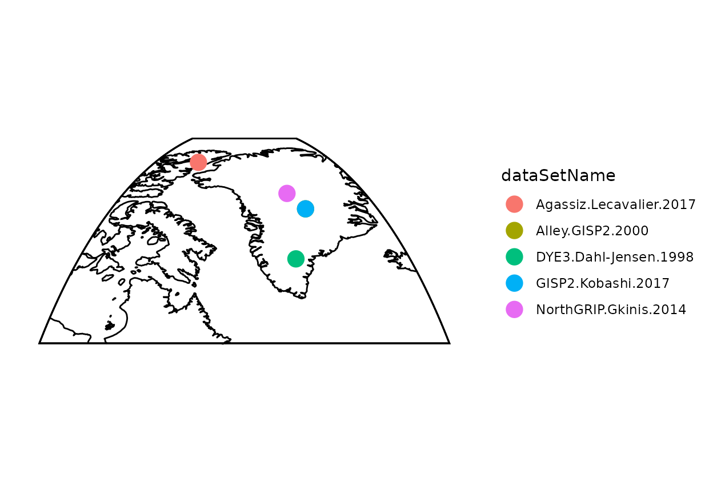
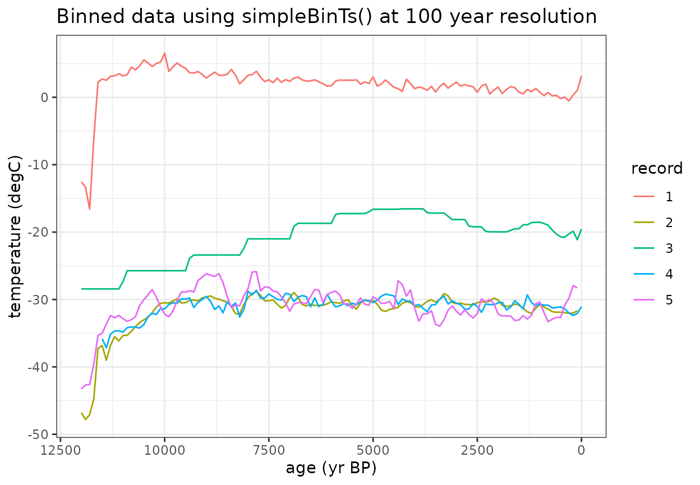

Temp12k_IceCore
Temp12k_IceCore.RmdPaleoclimate proxy records are used to evaluate long term changes in Earth’s climate at a single location. To calculate regional or global trends, composite records are often developed by averaging the values from different proxy timeseries to find the common climate signal among the various proxy records. However, records differ in the timespan they cover and the resolution at which a variable was measured. The variance of a record may also be impacted by these differences or by factors related to the deposition and archival of the proxy material.
The compositeR package is meant to provide one stop shop for prepossessing and stacking multiple records into a single timeseries
Standard Calibrated Composite (SCC) is one method which uses a single time window to align multiple records. SCC was one of five methods used by Kaufman et al. (2020) who describes the method as assuming “that the temperature variance is accurate for all proxy time series. Calculations rely on values in °C rather than standardized SD units. The non-calibrated records in the Temperature 12k database were not used”. In other words, SCC simply adjusts the mean within a given time interval to equal 0 for each record, and these anomalies are averaged together.
For this demonstration, we’ll apply the SCC method to a small subset of the Temp12k dataset
#LiPD packages
library(lipdR)
library(compositeR) #devtools::load_all() #
library(geoChronR)
#> Welcome to geoChronR version 1.1.14!
#General Packages
library(ggplot2)
library(tidyr)
library(dplyr)
library(magrittr)
library(purrr)We’ve already loaded the Temp12k LiPD files into the project data folder as “Temp12k”
- Refer to the “/data-raw/Temp12k.R” script for more information about how to load the data.
- First we’ll filter the Temp12k to only consider calibrated ice core records from the arctic for our demonstation.
#Load Temp12k files (already extracted) from package/data folder
Temp12k <- Temp12k
#Filter for demonstration
idx <- (pullTsVariable(Temp12k,'geo_latitude') > 50) & #arctic
#ice core
(tolower(pullTsVariable(Temp12k,'archiveType')) == 'glacierice') &
#Calibrated units
(tolower(pullTsVariable(Temp12k,'paleoData_units')) == 'degc') &
#if there is a summer and annual record, only choose the annual (the summer will be labeled as summer+)
(pullTsVariable(Temp12k,'climateInterpretation1_seasonalityGeneral') %in% c('annual','summeronly','winteronly'))
fTS <- Temp12k[idx]
#Map data to get a quick sense of what records we're using
plot(geoChronR::mapTs(fTS,color='dataSetName',size=5,lat.range=c(55,85),lon.range=c(-90,-20)))
Now let’s look at the timeseries data (this code chunk does not use any compositeR function)
- You’ll notice that the data have different temporal resolutions.
- Additionally, some data are provided as absolute temperature values, but some are anomalies.
#Rearrange the data for plotting
fTS_df_raw <- lipdR::ts2tibble(fTS) %>%
mutate(row = dataSetName) %>%
unnest(cols = c(age, paleoData_values)) %>%
mutate(record = rep(row, lengths(age)))
#Plot the raw data
ggplot(fTS_df_raw, aes(x = age, y = paleoData_values, color = as.factor(record))) +
geom_line() +
labs(title = "Raw data", x = "age (yr BP)", y = "temperature (degC)", color = "record") +
theme_bw() +
scale_x_reverse(limits=c(12000,0))Now let’s start looking at the composite process. First we need to define a common time axis to convert all of the data to
- The 100 year bin step was chosen for Temp12k. You’ll want to choose a binvec that is most appropriate for your research question and data resolution
#Age vectors to composite with
binvec <- seq(-50, to = 12050, by = 100)
binAges <- rowMeans(cbind(binvec[-1],binvec[-length(binvec)]))The simpleBinTs() function applies a uniform temporal resolution using a nearest neighbor interpolation
- Data within the same bin (binvec) are averaged.
- You can “fill” empty bins with nearby values if spread==TRUE
(default).
- Turn this off by setting spread=FALSE.
- Use spreadMax or spreadMaxPct to limit how far data can be spread (the default is stats::quantile(diff(ages),0.75).
- Turn this off by setting spread=FALSE.
- Alternatively, You can use sampleEnsembleThenBinTs().
- This function will sample from an ageEnsemble matrix or generate an ensemble using BAM.
- It will also add value uncertainty (default=1.5).
#Bin the values to a common timestep using simpleBinTs()
binMat <- as.matrix(purrr::map_dfc(fTS,simpleBinTs,binvec,spread=TRUE))
#Rearrange the data for plotting
fTS_df_binned <- data.frame(
age = rep(binAges, times = ncol(binMat)),
paleoData_values = c(binMat),
record = rep(1:ncol(binMat), each = length(binAges))
)
#Plot the binned data
ggplot(fTS_df_binned, aes(x = age, y = paleoData_values, color = factor(record))) +
geom_line() +
labs(title = "Binned data using simpleBinTs() at 100 year resolution", x = "age (yr BP)", y = "temperature (degC)", color = "record") +
theme_bw() +
scale_x_reverse(limits=c(12000,0))
The standardizeOverInterval() function scales the data as an anomaly relative to a defined interval
- If normalizeVariance==False, only the mean value during this interval will be subtracted.
- If normalizeVariance==True, the variance of each record will be
scaled to a constant variance within the interval.
- If you are working with data different units, this should be TRUE.
- standardizeOverRandomInterval() can be used to apply a random
interval within a defined searchRange.
- For this, you will also need to define a duration to find within the searchRange
- Because we’re only removing the mean and this is a demo, we’ll reduce minN (the minimum number of data points within the interval for a record to be included; default=8) so that all records are used.
interval = c(3000,5000)
#Standardize anomalies to reference window
stanMat <- standardizeOverInterval(binAges,binMat,interval,normalizeVariance=FALSE,minN=5)
#Rearrange the data for plotting
fTS_df_standardized <- data.frame(
age = rep(binAges, times = ncol(stanMat)),
paleoData_values = c(stanMat),
record = rep(1:ncol(stanMat), each = length(binAges))
)
#Plot the binned data
ggplot(fTS_df_standardized, aes(x = age, y = paleoData_values, color = factor(record))) +
geom_rect(aes(xmin = interval[1], xmax = interval[2], ymin = -Inf, ymax = Inf), alpha = 0.01, fill="lightgrey", inherit.aes = FALSE) +
geom_line() +
labs(title = "Binned & standardized data", x = "age (yr BP)", y = "temperature (degC)", color = "record") +
theme_bw() +
scale_x_reverse(limits=c(12000,0))Once the data are binned and standardized, use can calculate the composite mean
#Calculate weighted mean of standardized records
compMean <- apply(stanMat,1,mean,na.rm=T)
#Plot the binned data with composite mean
ggplot(fTS_df_standardized, aes(x = age, y = paleoData_values, color = factor(record))) +
geom_rect(aes(xmin = interval[1], xmax = interval[2], ymin = -Inf, ymax = Inf), alpha = 0.01, fill="lightgrey", inherit.aes = FALSE) +
geom_line() +
geom_line(data=data.frame(x=binAges,y=compMean),aes(x=binAges,y=y),color='black',size=2)+
labs(title = "Binned & standardized data (black = composite mean)", x = "age (yr BP)", y = "temperature (degC)", color = "record") +
theme_bw() +
scale_x_reverse(limits=c(12000,0))All of the necessary parameters can be applied in one function using the compositeEnsembles() function which will produce the same results with less code
Several additional defaults for the temp12k analysis (such as compositeSCC()) apply specific preset parameters to the compositeEnsembles() function.
#All of these steps can be applies useing wrapper function
composite <- compositeEnsembles(fTS,
binvec=binvec,
binFun=simpleBinTs,
stanFun=standardizeOverInterval,
normalizeVariance=FALSE,
interval=interval,
minN=5)
#This method can also be written as: composite <- compositeSCC(fTS,binvec,binFun=simpleBinTs,minN=5)
#Plot the comparison between this wrapper function with composite mean
ggplot(fTS_df_standardized, aes(x = age, y = paleoData_values, color = factor(record))) +
geom_line(data=data.frame(x=binAges,y=compMean),aes(x=binAges,y=y),color='black',size=1)+
geom_point(data=data.frame(x=binAges,y=composite$composite),aes(x=binAges,y=y),color='red',size=1)+
labs(title = "Comparison between compositeEnsembles() with step by step analysis", x = "age (yr BP)", y = "temperature (degC)", color = "record") +
theme_bw() +
scale_x_reverse(limits=c(12000,0))Now let’s create an ensemble using sampleEnsembleThenBinTs
#Number of iterations to perform
nens <- 50
#Ensemble composite using "all-in-one" wrapper function
ensOut <- compositeEnsembles2(fTS,
binvec=binvec,
binFun=sampleEnsembleThenBinTs,
stanFun=standardizeOverInterval,
normalizeVariance=FALSE,
nens=nens,
interval=interval,
minN=5
)
#> [1] "binning and aligning the data. This may take some time depending on the number of records (length(fTS)) and number of ensembles (nens)"
printComposite(ensOut)
#> Composite created for ages: 0-12000 yr BP at 100 year resolution
#> 5 proxy records used. The maximum data density occurs between 100-11500 yr BP
#> 50 ensembles generated
#> The maximum median value occurs at 7900 yr BP.
#> The minimum median value occurs at 12000 yr BP.
#> age median count
#> 1 0 -0.5655 3
#> 2 100 -0.9123 5
#> 3 200 -0.8620 5
#> 4 300 -1.6259 5
#> 5 400 -1.6458 5
#> 6 500 -1.7339 5
#TODO why is this plotting twice?
plotComposite(ensOut)
devtools::build_rmd(“vignettes/Temp12k_IceCore.Rmd”)